Project Summary

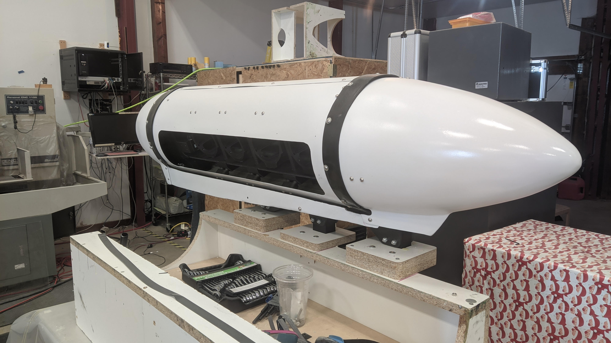
WAMI III is a lightweight, low-cost gigapixel-class Wide Area Motion Imaging system developed for the Air Force Research Laboratory (AFRL). An aircraft orbits miles above a target area while the system captures overlapping wide-angle imagery; onboard software performs real-time image registration, geolocation, and 3D reconstruction across the full scene. A custom pinion-gimbal design enables the entire sensor array to be housed inside a streamlined composite aerodynamic pod. I was responsible for the entire mechanical system design — gimbal, lens cages, composite pod, and aircraft attachment.
System Requirements
Pinion Gimbal Design
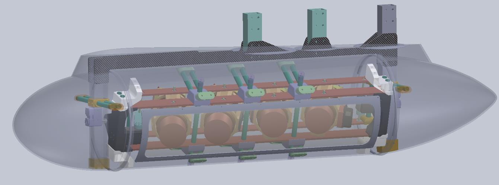
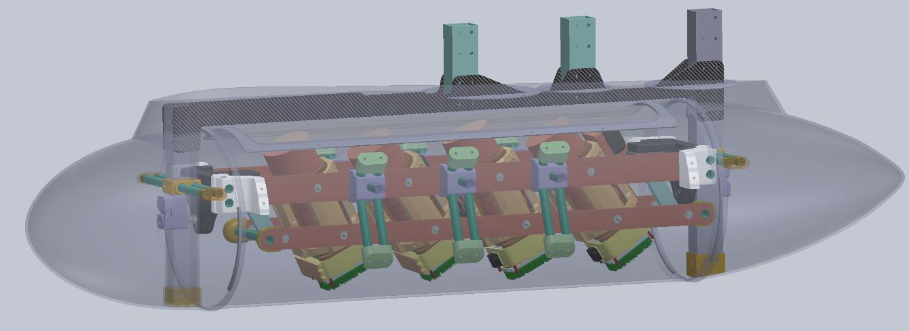
The gimbal uses a parallelogram four-bar linkage principle to keep the camera array level regardless of aircraft attitude, while a compact pinion arrangement drives pan and tilt through a minimal footprint.
- Carbon fiber (CF) throughout — chosen for low CTE, high stiffness-to-weight ratio, and dimensional stability under temperature swings at altitude.
- CF plates were CNC-milled and routed to tight tolerances.
- CF tubes and bearings press-fit and epoxied into 3D-printed interface parts.
- 6061-T6 aluminium box tube used for aircraft hardpoint attachment.
Adjustable Lens Cage
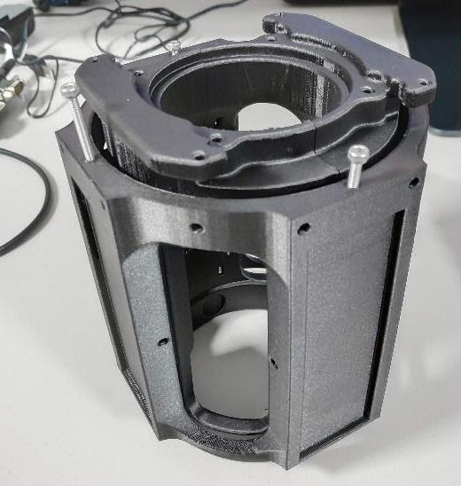
- Designed for swappable cameras — field swap in minutes without realignment.
- Four wedge clamps per cage provide precise, repeatable clamping force.
- Printed in Markforged CF-filled nylon for stiffness and print accuracy.
- Cage geometry retains full access to the focus ring for manual focus adjustment.
Composite Pod Construction
The aerodynamic pod was fabricated entirely in-house using a composite layup process:
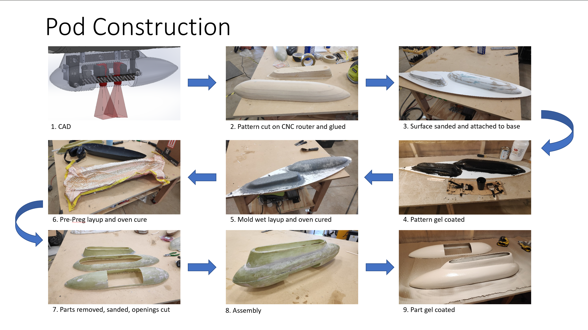
- CAD model of outer mold line (OML)
- CNC-milled foam plug
- Gel coat surface finish applied
- Wet/pre-preg carbon fiber layup
- Vacuum-bagged and oven-cured
- Demold, trim, and final assembly
The result is a lightweight, aerodynamically smooth enclosure that reduces drag and vibration compared to a box structure, while protecting optics from wind, rain, and debris.
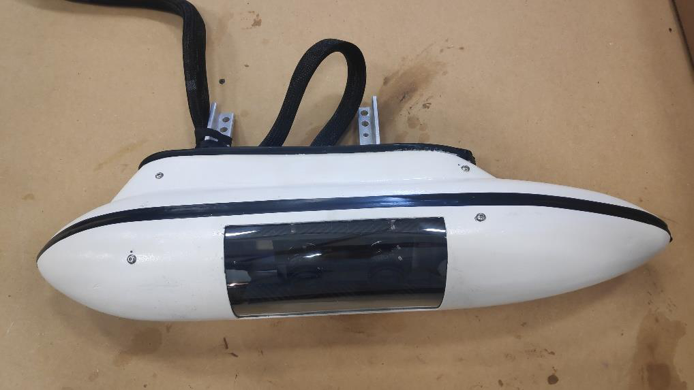
Multi-Camera Housing & FOV Optimization
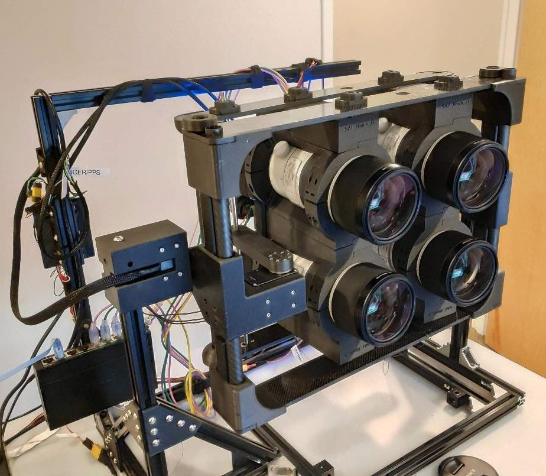
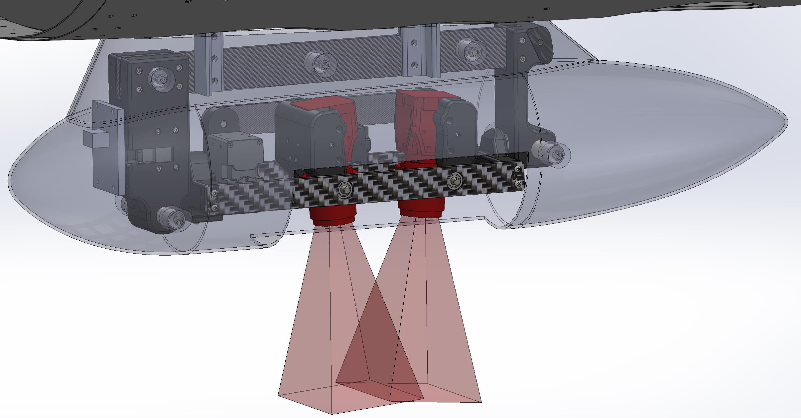
Camera placement within the housing was optimized to produce the fixed-overlap tiling needed by the stitching algorithm. Each lens cage locks cameras to a precise angular position; the FOV diagram shows the resulting coverage pattern and verifies that adjacent camera footprints overlap correctly at the designed flight altitude.
Pod Interior & Integration
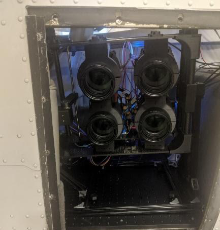
The gimbal and camera array are integrated into the composite pod shell. Quick-swap mounting fixtures allow the full sensor head to be installed or removed in under 5 minutes — down from over 1 hour with the original hardware setup.
Composite Shop Build-Out
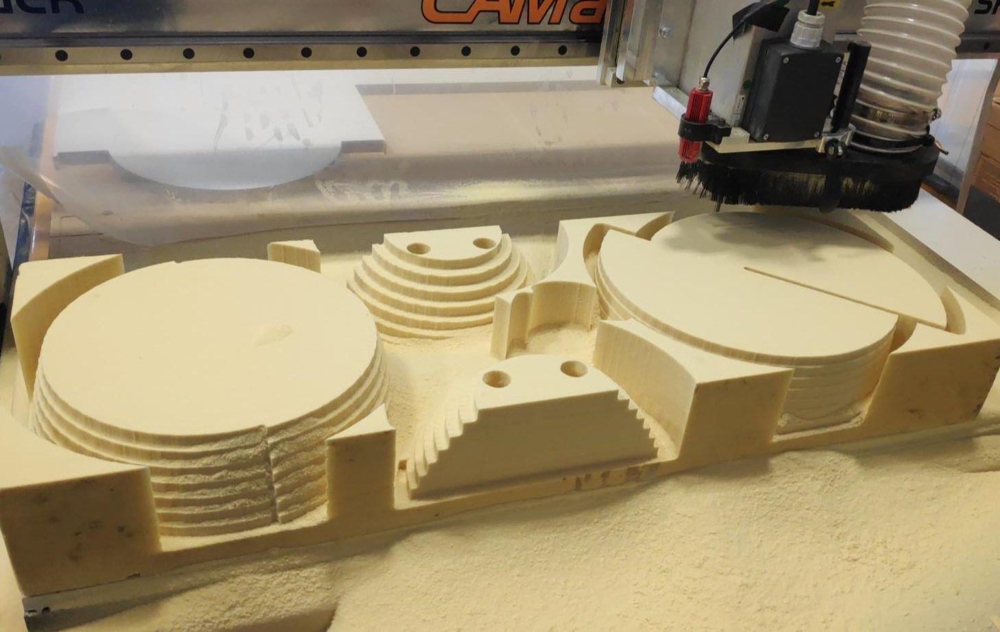
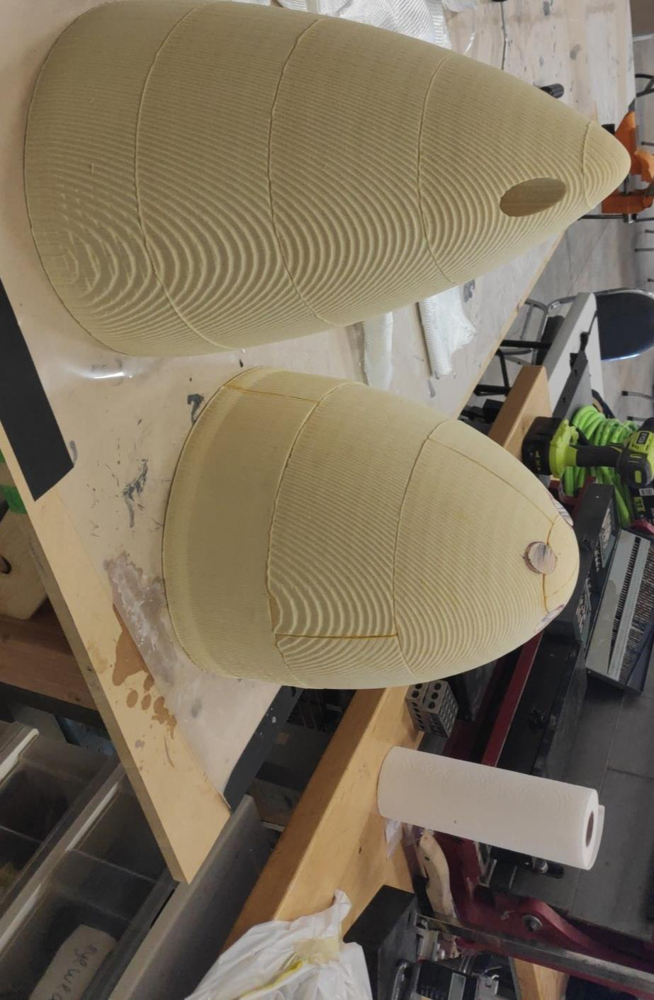
- Built the entire composite fabrication shop from scratch: 4×8 ft CNC router for mold-making, autoclave, curing ovens, and a dedicated paint/sanding booth.
- Hired and mentored junior engineers and the fabrication team as the program scaled.
Flight Testing & Outcomes
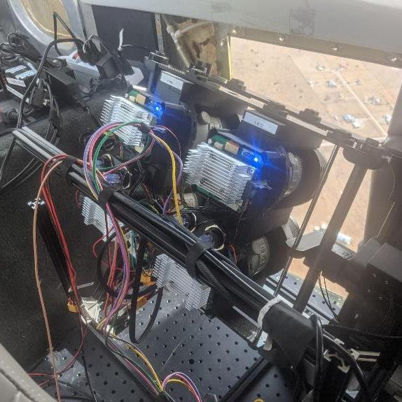
- Cost: delivered at ~98% lower cost than comparable government WAMI programs.
- Setup time cut from >1 hour to <5 minutes (∼90% faster) via quick-swap fixtures.
- 3D reconstruction demonstrated successfully; system mechanically stable across multiple flight tests.
- AFRL subsequently changed the program requirement to a ball-gimbal form factor, but the manufacturing know-how, optics calibration, and software pipeline carried forward.